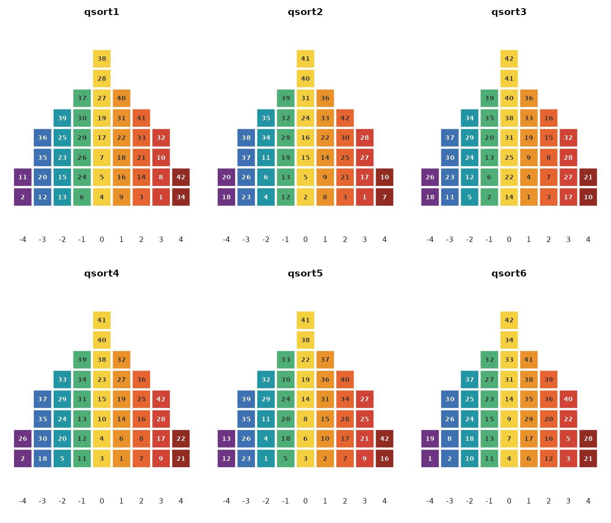
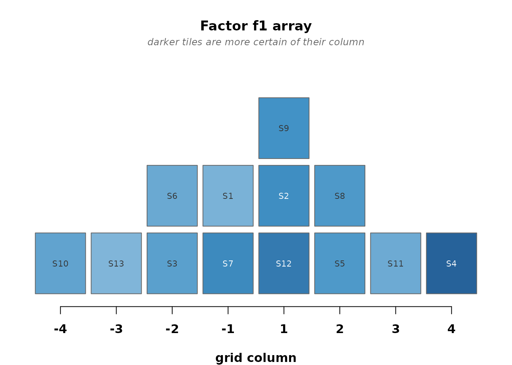
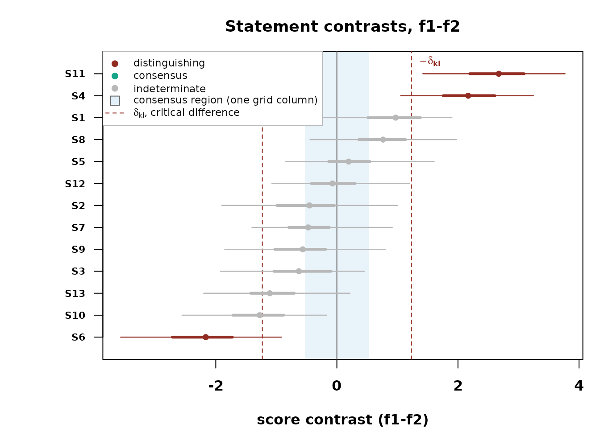

You have a stack of completed Q sorts and a practical question. How
many viewpoints does the panel hold, who holds each one, and which
statements set them apart? bayesqm answers from a model of
the sorting event itself. Each participant placed every statement into a
fixed grid, the quotas make that placement an ordered partition of the
statement set, and the package computes the probability of the observed
partition exactly. The tables that come back are the ones a Q study
reports, with the uncertainty of every entry.
This vignette walks one analysis end to end on a small demonstration
fit, so it knits in seconds. On real data, replace
demo_fit() with fit_bayesian(). A fit at
typical panel sizes takes a minute or two.
The sorts
read_qsort() reads the common formats. CSV and Excel
grids, PQMethod .DAT, Ken-Q JSON and multi-sheet Excel,
KADE ZIP exports, and Easy-HTMLQ Firebase JSON.
qdata <- read_qsort("mystudy.dat") # PQMethod file, for example
qdata <- qsort_data(Y, distribution = c(2, 3, 4, 5, 4, 3, 2))One scope note up front. The exact likelihood is a statement about
the forced sorting event, so fit_bayesian() requires every
sort to match the design grid and names any participant who does not.
Free-distribution studies, which Ken-Q, HTMLQ, and KADE permit, are
outside this model’s scope. The import functions still read them for
inspection.
Before any model runs, look at what the participants actually did.
plot(qdata) draws every completed sort as its own pyramid,
one tile per statement, the color giving the column it was placed in.
Here on obesity_sorts, the childhood obesity panel of Akhtar-Danesh (2023) that ships with the
package. 33 participants, 42 statements, a nine-column grid.

A reversed sorter, a pattern shared by nobody, a data-entry slip, all of it shows up here first, while it is still a data question rather than a modeling one.
The fit
fit <- demo_fit(seed = 1)
fit
#> bayesqm fit: exact partition (rank-order) likelihood, PX-Gibbs
#> 8 participants, 13 statements, 2 factors; grid 1-1-2-2-3-2-1-1
#> draws: 200 kept (500 iterations, burn 100, thin 2)
#> gate: passed (max Rhat 1.053; min ESS 36 bulk / 98 tail)
#> alignment: pivot draw 33, mean congruence 0.78
#> tables: compute_loadings(), compute_flags(), compute_factor_array(),
#> compute_qdc(), claims()The header carries what a fit is. The likelihood, the panel, the
draws, the convergence check, and the alignment. Convergence is judged
on summaries that do not depend on rotation, and a chain that misses the
bar is extended at successive doublings up to a cap. If it still misses,
the fit warns, and extend(fit) continues exactly where it
stopped, draw for draw identical to one longer run. Rotational, sign,
and label ambiguity is resolved by the MatchAlign procedure of Poworoznek et al. (2025) with a polarity rule, so
defining sorts load positively and every summary comes from one common
orientation.
Who holds each viewpoint
Loadings on a bounded correlation scale, with credible intervals.
head(compute_loadings(fit))
#> participant f1_loading f1_lower f1_upper f2_loading f2_lower
#> 1 P1 0.69758061 0.3510298 0.8852994 -0.35029454 -0.6733120
#> 2 P2 -0.11857555 -0.4985179 0.2018393 0.67754437 0.1103558
#> 3 P3 0.71649641 0.4107087 0.9122487 0.15110204 -0.3070454
#> 4 P4 -0.06232255 -0.4502353 0.3744591 0.64745185 0.1622277
#> 5 P5 0.74401521 0.3315242 0.9250481 0.02104403 -0.3902214
#> 6 P6 0.32643262 -0.1344789 0.6793355 0.40741163 -0.1900813
#> f2_upper spread
#> 1 0.06053878 1.5259877
#> 2 0.93709993 1.2808817
#> 3 0.51003980 1.3814252
#> 4 0.89838180 1.1044914
#> 5 0.42913354 1.4169065
#> 6 0.78570220 0.8629496A flag probability is the posterior share of draws in which a participant defines the factor, and the unclassified state keeps cross-loading and abstention visible instead of forcing a yes or no.
compute_flags(fit)
#> participant factor sign flag_prob unclassified_prob selected
#> 1 P1 f1 1 0.840 0.120 FALSE
#> 2 P2 f2 1 0.795 0.195 FALSE
#> 3 P3 f1 1 0.875 0.120 FALSE
#> 4 P4 f2 1 0.750 0.250 FALSE
#> 5 P5 f1 1 0.895 0.105 FALSE
#> 6 P6 f2 1 0.325 0.520 FALSE
#> 7 P7 f1 1 0.785 0.195 FALSE
#> 8 P8 f2 1 0.330 0.645 FALSEWhat each viewpoint says
The factor array is the viewpoint written as a completed sort, quota-exact by construction.
head(compute_factor_array(fit))
#> statement f1_grid f2_grid
#> 1 S1 4 1
#> 2 S2 5 6
#> 3 S3 3 3
#> 4 S4 8 3
#> 5 S5 6 6
#> 6 S6 3 8
plot_factor_array(fit)
Darker tiles are placements the posterior is more certain of.
Where they differ and where they agree
The critical difference is computed from the posterior spread of each score contrast, and consensus is a positive finding, the event that every factor places a statement within one grid column of the others. A statement can be distinguishing, consensus, or neither.
qdc <- compute_qdc(fit)
table(qdc$verdict)
#>
#> distinguishing (f1, f2) distinguishing (f1) indeterminate
#> 2 1 10
plot_contrasts(fit)
What gets reported
One rule decides. claims() keeps the most probable
flags, distinguishing statements, consensus statements, and pairwise
stars, and stops adding claims when the expected share of false ones
passes the level you set.
claims(fit, q = 0.05)
#> Selected claims at q = 0.05 (posterior expected FDR):
#> flags 0 participants selected (expected false 0.00)
#> distinguishing 5 listings selected (expected false 0.25)
#> consensus 0 statements selected (expected false 0.00)
#> stars 2 pairwise selected (expected false 0.08)The per-factor block
factor_characteristics() is the summary a results
section quotes. How many sorts define each factor, with an interval, how
spread the factor’s statement scores are, and how reliable its defining
sorts are.
factor_characteristics(fit)
#> factor flagged defining_modal defining_mean defining_lower defining_upper
#> 1 f1 0 4 3.585 2 5
#> 2 f2 0 2 2.265 1 4
#> score_spread reliability
#> 1 0.4153759 NA
#> 2 0.5072720 NAChecking the model
check_fit(fit, draws = 30)
#> Posterior-predictive checks (30 replicated draws):
#> agreement check (T1a): p = 0.60
#> extra-factor check (T1b): observed e_(K+1) at percentile 0.33
#> paired-comparison check (T2): p = 0.30 (worst statement 0.20)
#> diagnostics to read, not tests to passThe person check separates sorts the model spans from shared viewpoints it does not.
check_persons(fit, draws = 15, mixes = 30)
#> Person check: fits 8, no_shared 0, unspanned 0, atypical 0
#> participant m w partner partner_index verdict
#> P1 0.75 0.67 P3 3 fits
#> P2 0.76 0.71 P4 4 fits
#> P3 0.76 0.71 P5 5 fits
#> P4 0.68 0.71 P2 2 fits
#> P5 0.80 0.71 P3 3 fits
#> P6 0.48 0.62 P5 5 fits
#> P7 0.72 0.67 P5 5 fits
#> P8 0.36 0.39 P6 6 fitsHow many viewpoints
fit_ladder() fits a ladder of candidate K and
select_k() applies two checks together. Adequacy asks
whether K factors account for the shared structure in the panel. Support
asks whether every factor earns its place, meaning at least two selected
flags and one selected distinguishing statement. Expect one fit’s
runtime per rung.
ladder <- fit_ladder(qdata)
select_k(ladder)
plot_choice_k(select_k(ladder))loo_ladder() adds PSIS-LOO (Vehtari et al., 2017) as
directional corroboration only. At typical Q panel sizes its standard
errors cannot certify adjacent K.
Coming from PQMethod or qmethod
The outputs you know have direct counterparts. Flagging, automatic or
by hand, becomes compute_flags(), and claims()
selects the flags at your false-discovery level. The loadings table is
compute_loadings(), the factor arrays and z-scores are
compute_factor_array() and compute_zscores(),
and the distinguishing and consensus statements are the three-way
verdicts of compute_qdc(). In place of eigenvalue rules and
parallel analysis, the number of factors comes from
fit_ladder() and select_k(). Explained
variance alone has no counterpart in a generative model. Report the
defining-sort counts from factor_characteristics() and the
extra-factor check from check_fit() instead.
Reproducibility
Fits are exactly reproducible given a seed, and extend()
preserves that. It restores the sampler’s saved random-number state, so
continuing a chain after any amount of unrelated R work gives the same
draws as one uninterrupted run.
Where next
The remaining views are plot_zscores() for the whole
statement panel, plot_statement() for one statement in
depth, plot_loading_posterior(), plot_flags(),
plot_person_check(), plot_convergence(), and
plot_ppc(), with ggplot2::autoplot() methods
for loadings, flags, contrasts, and the array. The reference index at https://rdazadda.github.io/bayesqm/ groups every
function by task.